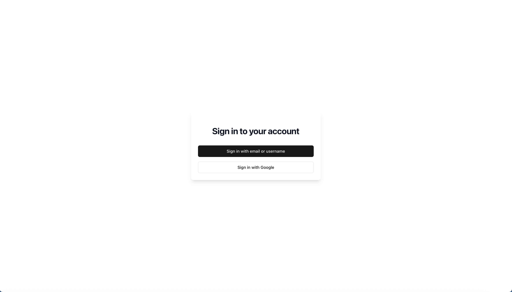
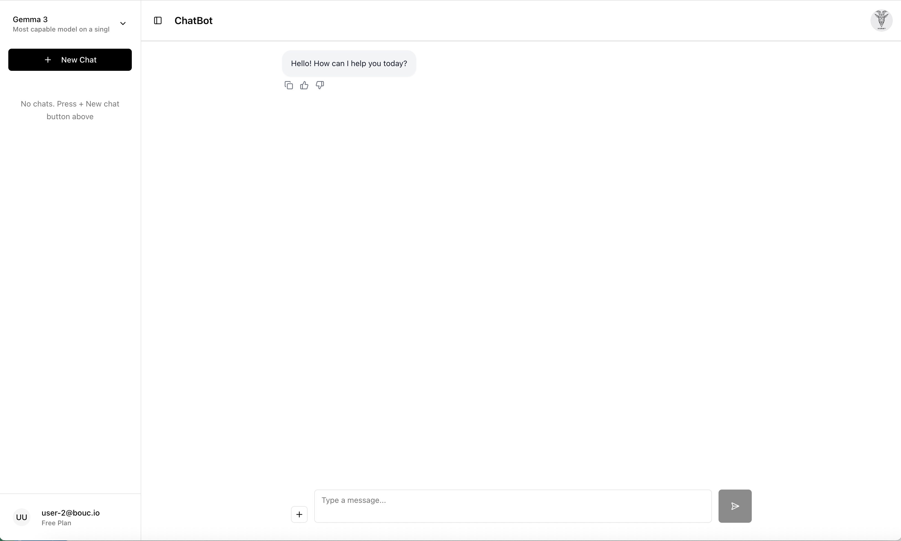
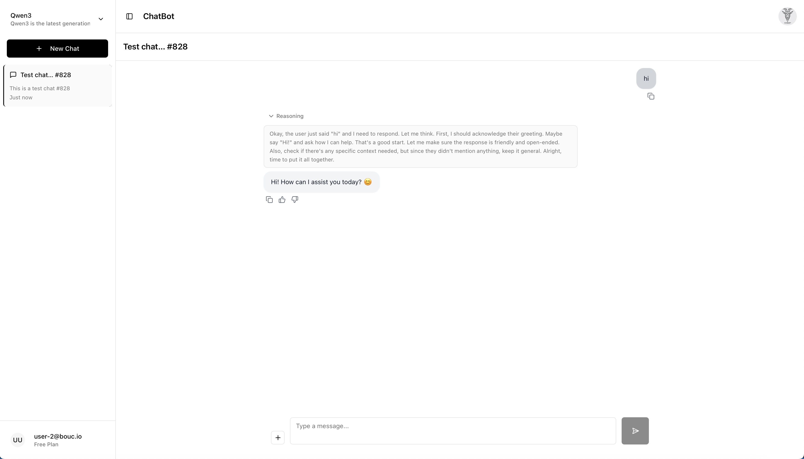

Building My Own Chatbot with Open-Weight LLMs and Ollama on my own Kubernetes cluster
My own chatbot on my own Kubernetes cluster...
Over the past several months, I've embarked on a journey to build my own chatbot solution on my provious project, leveraging open-weight large language models (LLMs) and a modern cloud-native stack. This project has been both challenging and rewarding, teaching me valuable lessons about authentication, session management, GitOps automation, and the complexities of deploying AI workloads on Kubernetes.
My chatbot solution integrates multiple open-weight models (Llama 3.2, Qwen3, and Mistral-Nemo) through Ollama, a very great open source tool for running LLMs locally or in containers. The entire stack runs locally or on Google Cloud Platform (GCP) using Google Kubernetes Engine (GKE), with infrastructure managed through Terraform and application deployments orchestrated via FluxCD for true GitOps automation.
Overall Architecture and Setup
The Technology Stack
The chatbot solution consists of several key components:
- Frontend (React + Vite + shadcn-ui + Tailwind CSS + TypeScript): A modern, monochrome-themed chatbot UI built with React, Vite, shadcn-ui, and Tailwind CSS. The UI supports multiple conversations, model selection, chat history management, and theme customization.
- Backend API (Node.js + Express.js + Prisma + PostgreSQL): A RESTful API server built on Node.js using Express.js, Prisma ORM, and PostgreSQL for managing users, chats, messages, and model configurations.
- Ollama Service (Ollama + Helm chart): Deployed as a Helm chart on Kubernetes, Ollama serves as the inference engine for multiple open-weight LLM models. Models are pre-loaded and managed through environment variables and persistent volumes.
- Authentication Stack (Keycloak + OAuth2-proxy + Istio): Keycloak provides identity and access management, with OAuth2-proxy handling session validation at the Istio gateway level.
- Service Mesh (Istio + External-DNS + Cert-Manager): Istio manages ingress, mTLS, and traffic policies, integrating with OAuth2-proxy for authentication at the edge, External-DNS for DNS management, and Cert-Manager for TLS certificates.
- GitOps Automation (FluxCD + Helm + Kustomize): FluxCD continuously reconciles the desired state from Git, automatically deploying updates to the Kubernetes cluster.

Deployment Architecture
The entire solution is deployed on Docker-Desktop locally or on GKE using Terraform anda GitOps approach. The FluxCD Git repository contains Helm releases, Helm repositories, Image Policies & Image Automation (where necessary) and Kustomize configurations for each component, with environment-specific overlays for local development and sandbox environments. Key components include:
clusters/
├── base/ # Base configurations for both applications and infrastructure
├── components/ # Git submodules for each component
├── local/ # Local development environment
└── sandbox/ # Sandbox environment on GCP
components/
├── chatbot-ui/ # React frontend Helm chart
├── chatbot-api/ # Node.js backend API Helm chart
├── ollama/ # Ollama LLM inference service Helm chart
├── keycloak/ # Identity provider Helm chart
├── oauth2-proxy/ # Authentication proxy Helm chart
├── istio/ # Service mesh configuration
└── cert-manager/ # TLS certificate management Helm chartEach component is versioned, containerized, and deployed through Helm charts stored in GitLab's container registry. FluxCD's image automation controller watches for new image tags and automatically updates Helm releases, ensuring deployments stay current with the latest builds.
Model Management
Ollama is configured to pull and run multiple models simultaneously. The available models are defined in the chatbot UI's environment variables as well as in the Ollama environment variables, for example:
VITE_AVAILABLE_MODELS:
- id: "llama3.2:1b"
name: "Llama 3.2"
description: "Fast and efficient model"
- id: "qwen3:0.6b"
name: "Qwen3"
description: "Latest generation of large language models"
- id: "mistral-nemo:12b"
name: "Mistral-Nemo"
description: "Built by Mistral AI in collaboration with NVIDIA"Users can switch between models dynamically through the UI, and the backend API tracks which model was used for each conversation, enabling model-specific analytics and optimization.
Key Challenges and Lessons Learned
1. Authentication and Session Management: The Biggest Hurdle
One of the most significant challenges I faced was implementing authentication and session management. The integration between Keycloak, OAuth2-proxy, and the React frontend required careful orchestration of token refresh, callback handling, and state management. Something I was not familiar with and had to learn a lot about.
The Challenge: Token Refresh and PKCE
Implementing automatic token refresh was particularly tricky for me. The Keycloak JavaScript adapter provides token refresh capabilities, but coordinating this across React components, axios interceptors, and the authentication store required careful state management. I implemented a centralized auth store that manages token refresh logic:
// Token refresh in axios interceptor
axiosInstance.interceptors.response.use(
async (error) => {
if (error.response?.status === 401 && !error.config._retry) {
error.config._retry = true;
try {
const newTokens = await authStore.refreshUserToken();
if (newTokens?.access) {
error.config.headers["Authorization"] = `Bearer ${newTokens.access}`;
error.config.headers["x-auth-request-access-token"] = newTokens.access;
return axiosInstance(error.config);
}
} catch (refreshError) {
// Handle refresh failure - redirect to login
return Promise.reject(refreshError);
}
}
return Promise.reject(error);
}
);Implementing PKCE (Proof Key for Code Exchange) for enhanced security added further complexity. The Keycloak adapter needed to be configured with the correct PKCE method (S256) and response mode (fragment). Debugging PKCE issues required extensive logging and understanding of the OAuth2 flow.
The Challenge: CORS and Cross-Origin Token Propagation
Because the frontend (app.domain.com) and backend (api.domain.com) run on separate hosts, I had to explicitly manage every aspect of cross-origin access. The browser's CORS enforcement meant that the API had to expose precise headers — in my case Access-Control-Allow-Origin: app.domain.com, Access-Control-Allow-Credentials: true, and allowed HTTP verbs (GET, POST, PUT, PATCH, DELETE, OPTIONS) — to support preflight requests and session cookies. Without these, authentication would silently fail before even reaching the backend.
The harder part was maintaining token continuity across Keycloak, OAuth2-proxy, and Istio. Once a user authenticated, the __domain_com cookie represented the session, while OAuth2-proxy validated it and injected the x-auth-request-access-token header into Istio's ext-authz flow. This ensured that every call from the frontend to api.domain.com carried a valid JWT without reauthentication. It took time to align the browser's CORS model, OAuth2 behavior, and Istio's security policies, but once configured, it provided seamless, end-to-end token propagation through the entire mesh.
The Challenge: Service Mesh Integration
Configuring Istio's external authorization to work with OAuth2-proxy required understanding both systems' authentication flows. The extension provider configuration needed to pass the correct headers upstream while validating sessions at the gateway level.
What I Learned
Building a good authentication system requires deep understanding of OAuth2 flows, token lifecycle management, and security best practices. The interaction between Keycloak, OAuth2-proxy, and the frontend application requires careful coordination of state, callbacks, and error handling. This was particularly challenging for me and remains so as I'm definitely not a security expert and had to learn a lot about OAuth2 and security best practices. Although it's working, I still don't think it is properly implemented following best practices.
Troubleshooting authentication wasn't just about fixing one configuration—it required understanding how every piece in the chain interacted. A login failure could originate from a browser CORS policy, a missing redirect URI in Keycloak, an expired session in OAuth2-proxy, or a header not passed correctly through Istio's ext-authz layer. Learning to trace these flows step by step—from token issuance to validation—became essential to make the system stable.
What made this challenging was that most tools work perfectly in isolation but fail subtly when combined. Keycloak expected OIDC semantics, Istio enforced mTLS and strict authorization, and the frontend obeyed browser security rules that none of the backend services were aware of.
2. GitOps and Infrastructure Automation
The Challenge: FluxCD Submodule Recursion
FluxCD's bootstrap process removes recursive submodule configuration by default to avoid potential issues.
However, my setup relies on Git submodules to reference component-specific repositories. I had to manually
re-add the recurseSubmodules: true configuration after bootstrap, which wasn't immediately
obvious for me and took me a while to figure out.
What I Learned
Adopting FluxCD for GitOps automation fundamentally changed how I manage deployments. Everything—from Helm releases to image updates—is now declarative, version-controlled, and continuously reconciled by the cluster itself. Instead of manually applying manifests or rebuilding environments, I simply commit changes to Git, and Flux ensures that the running state matches the desired one.
The image automation workflow was especially powerful: whenever a new container image is built and pushed, Flux automatically updates the corresponding HelmRelease, triggering a clean, auditable rollout. This eliminated human error, made every deployment reproducible, and turned the cluster into a self-managing system that enforces configuration consistency by design.
Having both a local (Docker Desktop) setup and a sandbox environment on GCP proved essential to developing with confidence. The local cluster gave me the freedom to iterate quickly, rebuild containers, and experiment with configuration changes without risk. The sandbox mirrored conditions with FluxCD GitOps automation, Istio routing, Keycloak authentication, and persistent storage, all running in the same topology as a real system.
This dual-environment workflow made every deployment reproducible. I could validate Helm charts, Flux reconciliations, and Istio gateway rules exactly as they would behave in production before merging any change. It turned testing from trial-and-error into a disciplined feedback loop that consistently revealed integration issues early, when they were still easy to fix.
3. AI Workload Management
The Challenge: Ollama Model Persistence
Ensuring Ollama models persist across pod restarts required proper volume configuration. I had to configure persistent volume claims (PVCs) with the correct access modes and ensure the Ollama data directory was properly mounted. Easy enough locally with Docker-Desktop, this was particular challenging on the Google Cloud Platform with GKE. The community Helm chart for Ollama required specific environment variables for model management.
What I Learned
Open-weight models like Llama 3.2 and Qwen3 provide excellent performance for my chatbot use cases. Ollama makes it straightforward to run multiple models simultaneously, allowing users to choose the best model for their specific needs. The models run efficiently on standard Kubernetes nodes with GPU support.
The End Result: A Full-featured Chatbot app running on Kubernetes
After months of development and iteration, the chatbot solution has evolved into a fully featured application. The user interface provides a clean, monochrome-themed experience that supports multiple authentication methods, dynamic model selection, and comprehensive user management. Below are screenshots showcasing the key features and pages of the application.
Authentication and Access
The login page supports multiple authentication methods, including email/password and Google OAuth (although removed / never fully implemented), providing users with flexible and secure access options.

Core Chat Experience
The main chat interface allows users to select from multiple open-weight models, manage conversation history, and interact with the AI through a clean, intuitive interface, heavily inspired by ChatGPT.

The chatbot supports advanced reasoning capabilities, in this example leveraging Qwen3, as shown in this example conversation where the model demonstrates step-by-step problem-solving for a very hard problem: answering "hi"!

User Preferences and Management
Users can customize their experience through the settings page, which includes theme selection and language preferences (all implemented, thanks to an AI assistant).

The account page provides users with access to their profile information and account management options.

For future monetization, the plan page is ready to display subscription information and pricing tiers.

Conclusion
Building this chatbot solution has been an incredible learning experience. The combination of open-weight LLMs, modern cloud-native infrastructure, and GitOps automation creates a powerful, scalable platform for AI applications. While the journey involved significant challenges—particularly around authentication and session management—the end result is a production-ready system that demonstrates the maturity of open-source AI tooling.
The solution showcases how modern DevOps practices (GitOps, Infrastructure as Code, containerization) can be applied to AI workloads, making them as manageable and scalable as traditional web applications, and has helped me learn a great deal about Kubernetes and its related technologies, GitOps and FluxCD, AI, LLMs and how they all work together.
Next Steps: Building My Own LLM
Looking forward, I'm planning to build my own LLM from scratch, using the knowledge I've gained from this project, focusing on both training and inference capabilities. I'm thinking to use nanoGPT as a reference implementation, which seems to provide an excellent foundation for understanding transformer architecture and training workflows.
Once I have a trained model, I plan to integrate it into the existing Ollama-based infrastructure.
The goal is to create a complete cycle: train a model, optimize it for inference, deploy it through the existing GitOps pipeline, and continuously improve it... It won't be as good as the big guys, but it will be a tremendous learning experience and it will be fun to build.